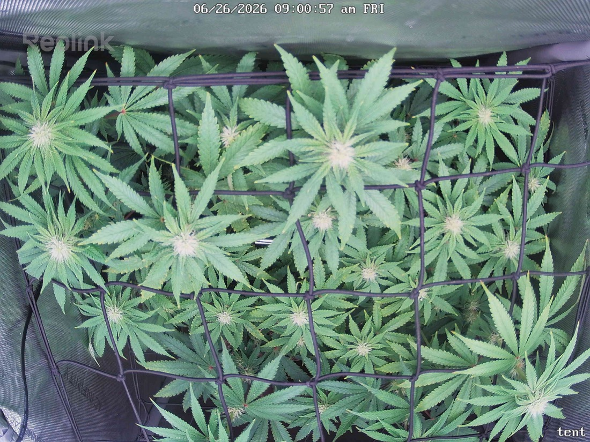

← All reports
Jun 26, 2026
Fri Jun 26, 2026 — 9:00 AM

Prognosis
Comparing 6/25 → 6/26 (~24h apart, so this is a short-interval test window):
- Growth/structure: Bud sites are noticeably more defined at the cola tops — pistil clusters at the canopy center and scattered sites are fuller and whiter than yesterday. Canopy is filling the second net well; spacing looks even and flat across the SCROG plane.
- Color: Deep, uniform green throughout. No new yellowing, fade, or interveinal patterns. A few older fan leaves show the genetic red petioles you already flagged — normal, not a deficiency.
- Posture: Leaves are flat and turgid, no tacoing or canoeing despite ~850 ppfd at the tops. No drooping or clawing — water status looks good post 6/24 2-gal feed.
- Tip burn (6/22 issue): Still looks contained. No fresh light-stress crisping on new top growth, consistent with your 6/24 note that the light raise fixed it.
- Pests: No stippling, webbing, or visible mites at this resolution. Upper surfaces clean — consistent with your repeated clean inspections since mid-June.
- Phase check: Germinated 4/28, flipped to 12/12 on 6/3 — so ~23 days into flower. Pistil development and cola fattening you're seeing is exactly on schedule for week 3-4 of bloom. Right where it should be.
Suggested next actions: No action needed — this is a healthy snapshot. Only note that 24h is too short to judge real growth rate; trust the multi-day trend (e.g., vs your 6/22/6/24 reports) over frame-to-frame.
Overall: Healthy, on-track week-3 flower — tip burn resolving, pest-free, tops fattening as expected.